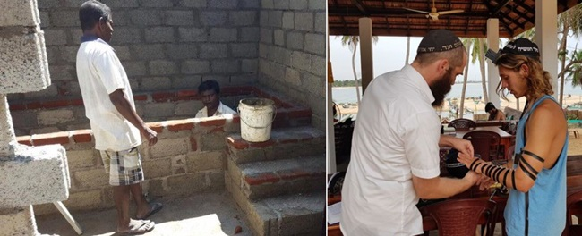

Surfing to Judaism on the Islands of Sri Lanka
Two enchanting coastal areas – Arugam Bay and Hikkaduwa, Sri Lanka – draw tens of thousands of surfers each year, including Jews from all over the world. Waiting there for them is the Arad family – Rabbi Ronny, Naomi, and their children Menachem Mendel, Sholom Dovber, and Levi Yitzchak – to give them a warm helping of Yiddishkait and Chassidus and to save some Jewish souls when necessary. A captivating interview with Rabbi Ronny Arad, who tells some thrilling and miraculous stories for the very first time from his shlichus along the seashore.
Translated by Michoel Leib Dobry

Sri Lanka stretches along an island near the southern tip of India, giving it the nickname “the tear of India” because of its geographical shape. The island is surrounded by breathtaking tropical shores, and a chain of ancient mountains and plantations of ripening tea fill its center. Two of the most attractive and toured beaches in Sri Lanka are Arugam Bay and Hikkaduwa. These sites are well-known, among other things, for their excellent surfing conditions. Surfing lovers from all over the world come to these islands each year.
Arugam Bay is ranked as one of the ten best surfing spots in the world. In addition, the place itself is a marvelous location for anyone looking for some quiet and relaxation. This is the hottest tourist site on Sri Lanka’s eastern shore, thanks to its superb beaches and spectacular vistas.
Each year, thousands of Jews from Eretz Yisroel and throughout the world come to these two islands.
During the past two years, an active Chabad House has been in operation at these two locations, in addition to the first Chabad House in the Sri Lankan capital of Colombo. “For the first six months of the year, we conduct our activities in Hikkaduwa, and when the tourist season ends there, we head south for another six months of Chabad programs in Arugam Bay. During the interim, we come to Eretz HaKodesh for a ten-day visit,” says the shliach on these islands, Rabbi Ronny Arad, who together with his wife has succeeded within three years to build a shlichus empire.
In Hikkaduwa, the shluchim rented and renovated a spacious three-story building in a central location on the island, transforming it into a Jewish Chassidic lighthouse. “There’s no tourist who comes to the island and doesn’t visit our facility. They all become exposed to the outreach activities held there. The building includes a synagogue, seven guest rooms, an assembly hall, a high-quality kosher restaurant, and an apartment serving the shluchim and the T’mimim who come to help.”
In Arugam Bay, the shluchim work in a building located near the shore with five guest rooms and a kosher restaurant. The shluchim are in the process of renting another three rooms to expand Chabad activities on the premises.
Thus, two Chabad Houses are suddenly founded…
Despite the flood of Jews coming to these islands, up until two years ago, there were no regular Jewish activities there. The country’s central Chabad House would send yeshiva students for the Jewish holiday seasons, organizing Pesach Seiders or prayer services for the High Holidays. Since the arrival of the Arad family – Rabbi Ronny, his wife Naomi, and their children Menachem Mendel, Sholom Dovber, and Levi Yitzchak – Chabad activities on these islands have become permanent and continue to grow. Many have put on t’fillin for the first time in their lives, coming closer to the path of Torah and connecting to the Rebbe.
“We spent a lengthy period of time searching for a place to go out on shlichus,” recalls Rabbi Arad of those early days. “We initially thought about going to India; however, all of our inquiries on new locations in need of shluchim proved unsatisfactory. We also received shlichus offers in Central America, but they too were unsuitable. The search continued for two years.
“Then one day, I visited the Chabad yeshiva in Ramat Aviv, where I met a friend, Yehonatan B., who had heard that I was looking for a shlichus.
“Yehonatan said that when he was visiting his parents in Ma’ale Adumim, he went into the Chabad shul and met the shliach in Colombo, Sri Lanka, Rabbi Shneur Maidanchik, and he heard that he was looking for additional shluchim in the country. At first, he and his wife considered accepting the challenge for themselves, but the Rebbe told them in Igros Kodesh to remain in Eretz Yisroel.
“When I told him that we are also looking to go out on shlichus, he suggested that I check into this offer in Sri Lanka. We did, and a week before Pesach, we received a call from Rabbi Maidanchik.”
The shliach in Colombo suggested to the Arads that they conduct their outreach activities on the two islands. Unlike other shluchim who run seasonal Chabad Houses operating six months a year, the programs on these islands would be year-round, six months on each island. Rabbi Arad realized that this would be a double shlichus – establishing two Chabad Houses with all that it implied.
After Rabbi Arad and his wife had thoroughly investigated this offer, they decided to ask the Rebbe Melech HaMoshiach for his advice. In a letter from Igros Kodesh, Vol. 19, pg. 345, the Rebbe left no room for doubt: “May it be G-d’s Will that he will bring good news in all matters that he writes about – in a clearly good and revealed manner, and as in the well-known saying of my revered and holy father-in-law, the Rebbe, that when G-d gives materially to His people, the People of Israel, they have the ability to show in actual deed how materialism is transformed into spirituality.
“My telegram has surely been received with regard to the buildings and the [need for] swiftness in the matter, and in the language of the Alter Rebbe in Igeres HaKodesh, Epistle 21, ‘wondrous alacrity,’ and in the role of Mara D’asra, this also pertains to his position of authority, and they will surely utilize all that is required in fulfilling the will of our Rebbeim, to build houses, both materially and spiritually together.”
A few months later, the Arad family packed their belongings and set out on their shlichus.
While they encountered their fair share of difficulties at the outset, as things began to progress, they succeeded in establishing two magnificent Chabad Houses, first in Hikkaduwa and then later in Aragam Bay. The shluchim invested considerable resources and effort in these two locations, out of a desire that their efforts will serve every Jew both materially and spiritually.
“We arrived first at the central Chabad House in the capital city of Colombo. The Maidanchik family hosted us with great Chassidic warmth, and Rabbi Maidanchik and I went out to the coastal areas to prepare them for our shlichus activities. For some reason, I decided to go first to Hikkaduwa and to search for an appropriate location to base our Chabad House activities in order that we will have a place for the start of the coming year. Only afterwards would we go to Arugam Bay and commence our activities there.”
FIRST RESCUE
“Since I had never been in Sri Lanka and I was unfamiliar with life there, I was joined by the shliach in the capital city of Colombo, Rabbi Shneur Maidanchik. This was at the height of the summer season, and the heat rose to extremely high temperatures with oppressive humidity. At the guest house where we were staying, there was no air conditioner and the sweating was unbearable.
“Before Shacharis, we went out to one of the beaches to immerse ourselves, and when we came back, we got ready for davening. While Rabbi Maidanchik was busy davening, his mobile phone started ringing again and again. Since the ringing didn’t stop, I took the initiative and answered for him.
“On the line was a woman who said that her son was now on a tour of Arugam Bay. She was very worried over his mental health and the danger he was in, and she then asked if we could help him. I was amazed by the incredible Divine Providence. I told her that we had arrived there only twelve hours earlier, adding that I was about to open a Chabad House on the location. She gave us the telephone number of his traveling companion, but we weren’t able to contact him. We eventually found him in the street in a very lowly emotional state, exactly as his mother had described.”
The shluchim managed to convince him to leave the guest house where he was staying and move into their room. The purpose was to watch over him and help him as much as possible. They started a process of persuasion to get this young man to change his plans of flying to Nepal and to go back home to his parents in Eretz Yisroel instead.
“His story was a very sad one. He had been a staff commander in an elite unit with the Israel Defense Forces, and during his service he suffered a serious trauma. He took pills that only worsened his condition, requiring him to undergo a lengthy period of psychiatric rehabilitation.
“For the next twenty-four hours, this young man remained close to us, and after we found an appropriate place for our activities, Rabbi Maidanchik went back to his place of shlichus, while the young man and I boarded a plane back to Eretz Yisroel. A week later, our whole family was on a flight to prepare another spot on the globe for the revelation of Melech HaMoshiach. Thus, I had proven from the very first moment that there was a need for a large and active Chabad House on two islands. I saw this as a great privilege that the preparations themselves had led to the saving of a Jewish soul.”
SECOND RESCUE
Large numbers of young Israelis and other Jews from all over the world visit these seashores, many of whom have never before experienced the warmth of a Chassidic Jewish home. In addition to the surfing and touring, there are many visitors who come to these beaches to rest and find a little peace and tranquility; among them are those who define themselves as “spiritual.”
Rabbi Arad has some fascinating stories that illustrate the strength and influence of his programs. Here is one such story:
“No day passes without dozens of Israelis coming into the Chabad House, some of whom even lodge in our guest rooms.
“During our first year on shlichus with Chabad House activities in Hikkaduwa, we were visited by an Israeli couple who were in the midst of a profound search for the essence of life. They came to us after a lengthy journey in India, where they discovered harmful substances that they believed would help them attain greater serenity. They arrived on a Wednesday, and we had a long talk with them about faith and the essence of life. After another few days, we had no contact with them. On Shabbos, they chose not to participate in the Torah classes or prayer services.
“On Motzaei Shabbos, numerous Israelis came to the restaurant for a meal, and I came there to meet people and make inquiries. Suddenly, one of the kindergarten teachers who help us on our shlichus came in and said that a woman was sitting at the door of her companion’s room, crying bitterly. When she went over to her and asked what the problem was, the woman asked for me. I came to hear what she had to say, and she proceeded to give me some chilling information. She said that in recent days, she had been having philosophical discussions about life with her friend, and they had come to the conclusion that the whole world is a huge falsehood. As a result, he told her that he sees no reason to live and he’s planning to ch”v put an end to his life.
“The woman thought that he was making a joke. However, at a certain point, he left the room and disappeared, and the woman had no idea where he might be. When I heard this, I didn’t waste any valuable time. I ran out of the Chabad House, realizing that every passing minute was critical for us.
“By Divine Providence, the motorized bike of one of the Chabad House employees was standing at the entrance. In a wink, I got in and asked the employee to take me immediately to the train tracks. We traveled along the length of the tracks until I suddenly noticed the figure of a man sitting in the train’s path. I got closer and I recognized him. When he saw me, he didn’t look very surprised, responding with complete apathy. This unusual situation took place just four months after beginning our shlichus. I didn’t know what to do or how to do it. I simply hugged him for a long while and then asked him to listen.
“Whenever a train got closer, we distanced ourselves from the tracks; moving back only after the train had passed. For about a full hour, I listened to his anguish and all his frustrations. Finally, I told him that he has a great deal of courage, searching for some relief for his personal difficulties. We continued to speak, and the entire conversation centered on his many positive qualities, which regrettably had brought him to an incorrect decision. As we continued talking, we got further away from the tracks, walking along the shore by moonlight. When we finally reached the Chabad House, we opened a Tanya and learned about how a Jew deals with difficulties.
“This young man, a kibbutznik from northern Israel, chose life that night. He remained with us in the Chabad House for another two weeks while we learned Chassidus together. He resolved to put on t’fillin each weekday morning, and when he went back to India with his companion, I lent him a pair of t’fillin, which he eventually returned after a period of time, but not before purchasing a new pair of his own.
“From India, he sent an emotional letter to the Chabad House as a sign of thanks and appreciation that we had saved his physical and spiritual life. Before leaving us, he wrote to the Rebbe and received a moving answer dealing with a Jew’s free choice.”
AMAZING DIVINE PROVIDENCE ON EREV SIMCHAS TORAH
Rabbi Arad describes the day-to-day reality in a Chabad House like this one, accompanied by the Rebbe’s holy brachos every step of the way. “Each year before Tishrei, we prepare to move to the second Chabad House in Arugam Bay. However, each time we raise the question of whether we should leave before or after Simchas Torah.
“When it starts to rain along the coast, this adversely affects the ability to do wave surfing, and therefore, the surfers move to a coastline where the sun is shining. During the first year of our shlichus, a rumor spread that the waves along the other coastline were better, and most of the tourists decided to leave earlier.
“About two hundred and fifty tourists came to the Chabad House for Rosh Hashanah, but as the days passed, their numbers dwindled. There were far less on Yom Kippur, and on the first days of Sukkos, we had trouble getting a minyan together. As a result, the T’mimim on shlichus with us suggested that we go to the capital city of Colombo for Simchas Torah, where Jews could feel the Chassidic atmosphere of this holy day with far greater intensity. However, I stubbornly chose to follow a different course: Even if there’s only one Jew on the island, it will be worth it that we celebrated Yom Tov here just for him.
“One of the T’mimim shluchim wasn’t all that enthusiastic about the decision to stay, and he proposed that we ask the Rebbe for his advice and bracha. Thus, on Shabbos Chol HaMoed, he opened one of the volumes of Igros Kodesh in the Chabad House library. As he opened the seifer, he noticed an open kvittel on the page and his curiosity piqued immediately as he saw its heading – ‘the night of Hoshana Rabba.’ The letter stated that it was very difficult to get Jews together for Simchas Torah and they were asking the Rebbe for a bracha to leave their place of shlichus on the island and travel to Colombo.
“It suddenly became apparent that the shluchim couple that had been on the island several years earlier, prior to our arrival, had also experienced the very same doubts, and lo and behold, the letter they had written appeared before us now. The Divine Providence amazed this bachur, who realized that it was a revelation of ‘the finger of G-d.’
“What was even more astounding was the answer he received in Volume 8, pg. 306: ‘…And in relation to his question about how he finds no satisfaction nor does he see any place for his growth in Eretz HaKodesh, may it be rebuilt and re-established, now and even in the future, and thereby the question is again posed regarding moving from there.
Thus, in my opinion, on the contrary, as I see the situation in Eretz HaKodesh, may it be rebuilt and re-established, in relation to the work of Chabad and after speaking here with Mr. Shazar, sh’yichyeh, on the contrary, there’s room for the greatest possible development, and as Midian and Moab are always quarreling, the Jewish People can use this to strengthen their position and situation, and delicately among the Jewish People themselves, provided that they stand on the watch to use every opportunity, e.g., that it be in the ways of pleasantness and the ways of peace.’
“This bachur then shared with us the incredible Divine Providence of the kvittel and particularly the clear answer he had received from the Rebbe not to leave where he was. I’ll never forget the deep emotion that engulfed him. Understandably, after such a revelation, everyone agreed to stay.
“After a few minutes, a young Israeli came into the sukka. He said that he headed a group of youngsters who had just arrived from Eretz Yisroel, adding that it had been recommended that they come to Arugam Bay. They were from traditional homes, and it was important to them to have a proper holiday atmosphere, but they didn’t know that there was a Chabad House on site.
“The guide said that he knew, by Divine Providence, of the existence of a Chabad House. When they arrived at the hotel, they saw at the front of the building a motorcycle belonging to one of the Chabad House employees and bearing a bumper sticker with the words ‘Welcome Moshiach.’ They inquired about the meaning to this sticker, and this eventually led them to us.
“This chain of events is an amazing illustration of Divine Providence – the doubts, the Rebbe’s letter, and the immediate arrival of the young people who were looking for us for several long hours. Of course, Simchas Torah that year was celebrated with a totally different aura of joy and emotion…”
TOUCHING THE SOUL THROUGH TANYA
Anyone acquainted with Rabbi Arad knows that he is a people person who invests hours in friendly heartfelt one-on-one talks. He continues this custom even on his busiest days, when the responsibility of running the Chabad House grows particularly heavy.
During the week, several classes in Torah and Chassidus are held regularly at the two Chabad Houses. However, the main emphasis is on learning with a chavrusa. “We are trained according to the path of Chassidus and the teachings of the Rebbe to use every available method for holiness.
“One of the most prominent features of our place of shlichus is wave surfing. For a long time, I thought about how to cast holiness onto this attraction. Over a period of time, we have established a good connection with a young Israeli named Dor Damari, a well-known surfing expert with a vibrant heart for Yiddishkait. He comes to our islands in Sri Lanka several times a year as the head of a group of young people from Eretz Yisroel for a few days of surfing instruction. He usually arrives with surfers with no past experience and gives them training classes. I have developed a very nice class at the Chabad House that connects concepts in Judaism with wave surfing, providing some interesting insight based on the teachings of Chassidus.”
It would be interesting to hear examples of how you make a connection between Yiddishkait and the art of surfing.
“Dor speaks a great deal with people about the need to identify the waves and choose the proper response. The statement that constantly repeats itself is: ‘Respond correctly to the situation by understanding it correctly and perceiving it in the correct way.’ I sharpen this point for them, speaking about how not everything our physical eyes perceive is true. In fact, the truth is a more inner G-dly reality, and when we understand it, we will then know how to react to it in the proper manner.
“There are different types of surfers and they all must work harmoniously. I speak with them at length about the difference between one person and another, not just in knowledge but also in the avoda they are required to carry out. Each has a different shlichus in this world, and when we realize this, there is harmony.”
During the past three years, many young people visiting Sri Lanka have been brought closer to the path of Torah and become stronger in their mitzvah observance, among them are several who have even become complete baalei t’shuva in the merit of the shlichus activities. “There is a young man who came to us at the start of our shlichus. While he was raised in a religious Zionist home, he broke away from his traditions. At his first visit to the Chabad House, he came accompanied by a childhood friend who had continued to observe mitzvos. A good connection quickly developed between us, and he remained at the Chabad House to volunteer his assistance.
“He stayed at the Chabad House in Hikkaduwa for the duration of the tourist season, and then moved on to Arugam Bay, where we spent considerable time learning Tanya together. He got much closer through studying Chassidus until he became an integral part of the Chabad House. He’s been with us now for three years. During our last visit to Eretz Yisroel at his parents’ home, we saw that he had cut off his ponytail and was wearing a kippah and tzitzis – steps that did not come easy for him.
“There’s another young man who came from a totally different background: He grew up in a secular home on a moshav in the Sharon region. He spent a good number of years engaged in a self-search, learning different treatment approaches and reading numerous books on philosophy. One day, he came into the Chabad House with a friend, and we forged a good connection with him. After a few visits, he flew to India for a trip lasting six months, and afterwards, he decided to return to Sri Lanka and he came to the Chabad House. His main difficulty with Judaism was that we claim that it’s the only real truth in the world, whereas he claims that ch”v there are others.
“I chose not to get into philosophical discussions with him. Instead, I merely repeated that Yiddishkait is the ultimate truth; if only he would merit recognizing and feeling it! As time progressed, we learned a great deal together. While he became much closer to his traditional roots, resolving to fulfill mitzvos, etc., it was still very hard for him to accept this point.
“One evening, we were sitting and learning the maamer ‘Ana N’siv Malka.’ When we finished learning the maamer, he sat for a few minutes in complete shock. I’ll never forget how he said to me, ‘Now I understand why I do netilas yadayim and put on t’fillin.’ This young man today learns in Ramat Aviv.”
CHILDREN OF SHLICHUS ARE SHLUCHIM THEMSELVES
Thank G-d, you have three children. How do you manage their education when they have no Talmud Torah or Chassidic study program, not to mention no Chassidic environment?
“First of all, we make certain every year to bring teachers here to tutor our children. There’s a WhatsApp group for shluchim from around the world with programs and activities for children, and this also helps a great deal. We don’t think that they acquire less knowledge than any another child of the same age learning in a kindergarten in Eretz Yisroel.
“Another important factor: We have been privileged that our children are very sociable and most helpful in our shlichus. Just last Shabbos during the meal, our eldest son Mendy got up and told all the tourists about the Exodus from Egypt leading to the giving of the Torah on Mt. Sinai. All the tourists sat for thirty minutes in total silence. The children feel that they are on shlichus.
“A few days ago, we met a couple that had been traveling in Sri Lanka over the past year. At a certain point, the woman asked our eldest son where he preferred to live, Sri Lanka or Eretz Yisroel. I was very curious to know what his reaction would be; he was just four years old. His answer surprised me. He replied that it’s best to be on the Rebbe’s shlichus… This is the conscience of a young shliach.”
How do you integrate and apply in practical terms the Rebbe’s directive to spread the announcement of the Redemption?
“I look at this on two levels. There is publicizing Moshiach on a comprehensive level; we proclaim ‘Yechi Adoneinu’ and there are naturally signs announcing the coming of Moshiach. People show an interest, ask questions, receive answers, and get connected.
“However, there is a more inner level – transforming our skills and abilities into holiness. In my past life, before following the path of Torah, I ran two restaurants. Now, here I am, harnessing my talents and experience for holy matters. As a result, I succeed in getting about seventy Jews each day to eat Kosher LeMehadrin food.
“Based on my understanding, when the Rebbe says, ‘Do everything in your ability,’ that means that each person possesses his own abilities, which must be used to spread the wellsprings of Chassidus. A Jew needs to take the talents he has been blessed with, all the knowledge he has acquired in any given field, and transform them into holiness and Redemption. I speak a great deal about this with tourists. You don’t have to split the atom; each person has his own inborn abilities.
“A few weeks ago, before we set out on a visit to Eretz Yisroel, a tourist wrote to the Rebbe and received an answer about using her talents for spreading Chassidus. She works as a surfing instructor and we suggested that she put some G-dliness into this field, i.e., teaching only girls and women, surfing on a separate beach. She was very excited by this proposal, and she just sent us an e-mail that she had stopped teaching males and had started working as an instructor at a religious school for girls in danger of dropping out. This is a kind of personal Redemption, which will bring the overall Redemption.”
Nosson Avrohom. "Surfing to Judaism on the Islands of Sri Lanka." Beis Moshiach, no. 1129 (August 1, 2018).